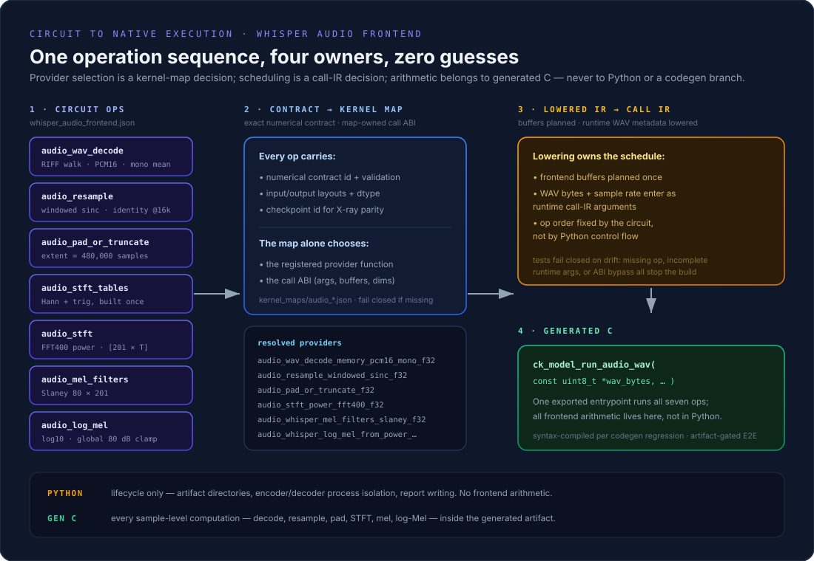

Whisper Tiny End-to-End
src/kernels/audio_kernels.c and include/ckernel_audio.h — WAV decode,
resampling, pad/truncate, STFT/FFT-400, Slaney Mel, log-Mel, Conv1D stem, and layout primitives.
The frontend is the circuit version/v8/circuits/whisper_audio_frontend.json; encoder and
decoder topology lives in version/v8/circuits/audio_transformer_encoder.json and
version/v8/circuits/audio_transformer_decoder.json; lifecycle orchestration in
version/v8/scripts/ck_run_v8.py (unified cks-v8-run audio command). Per-kernel
math and diagrams:
Concepts — Audio Frontend & Cross-Attention;
per-kernel deep dive: Audio Kernels Deep Dive.
CKE v8 runs a generated FP32 Whisper Tiny encoder and decoder from a
PCM16 WAV file — and the frontend is generated too. WAV decode,
windowed-sinc resampling, pad/truncate, STFT table construction, FFT400
power, Slaney Mel filters, and log-Mel normalization are seven explicit
circuit operations in
version/v8/circuits/whisper_audio_frontend.json, each with an
exact numerical contract and a map-owned call ABI. The resolved operation
sequence lowers through call IR into generated C exporting
ck_model_run_audio_wav. Python coordinates artifact lifecycles
and process isolation; it performs no frontend arithmetic. Codegen contains
no Whisper model-name branch; every arithmetic boundary resolves through a
kernel-map contract.
How the Audio Pipeline Works
The diagram follows one WAV file through the full system: contract kernels prepare the log-Mel grid, the generated encoder writes an immutable encoder memory once, and the generated decoder reads it on every cross-attention step while its own KV-cache grows token by token.
Generated Frontend: Circuit Ops to Generated C
The frontend began as direct C calls selected by the Python runner —
useful correctness bring-up, but provider selection sat outside the v8
architecture. It is now seven explicit circuit operations
(audio_wav_decode, audio_resample,
audio_pad_or_truncate, audio_stft_tables,
audio_stft, audio_mel_filters,
audio_log_mel), each carrying an exact numerical contract and
a map-owned call ABI. Lowering plans the frontend buffers and lowers the
runtime WAV metadata into call IR; the resolved sequence generates C
exporting ck_model_run_audio_wav.

- Provider selection is a kernel-map decision. The map alone names the registered provider and its call ABI; tests fail closed when an operation is missing or the provider inventory bypasses map-owned ABI accounting.
- Scheduling is a call-IR decision. Operation order and buffer lifetimes come from the circuit through lowering — not from Python control flow, and not from a codegen branch.
- Python owns lifecycle, generated C owns arithmetic. The runner coordinates artifact directories, encoder/decoder process isolation, and report writing; every sample-level computation executes inside the generated artifact.
What Nightly Proves, and What Stays Opt-In
Coverage is split deliberately, because GitHub runners do not carry the generated Whisper artifacts:
- Nightly — Audio Log-Mel Frontend. The optimized C FFT/log-Mel frontend is compared against a PyTorch oracle on every nightly run.
- Nightly — Audio Transformer Primitives. Resampling, FFT, Conv1D, GELU, layout transforms, self-attention, and cross-attention are exercised against their contracts on every nightly run.
-
Nightly — v8 audio circuit/codegen regression.
The generated-circuit lowering and codegen path is gated portably,
without model weights. These rows now cover the full frontend sequence:
native arithmetic, exact provider resolution for all seven ops, the
generated
ck_model_run_audio_wavABI, unified-command CLI ownership, and synthetic compilation. -
Opt-in artifact test — full model-and-WAV
transcription. End-to-end transcription runs where the
generated encoder and decoder artifacts exist, via
make test-whisper-e2e-auto. The gate requires the full reference token sequence and EOS without tolerance relaxation.
Transcribe Arbitrary Audio
Convert any source format to mono 16 kHz PCM16 WAV first:
ffmpeg -i your-audio.mp3 \
-ac 1 -ar 16000 -c:a pcm_s16le \
/tmp/test-audio.wavThen run the generated pipeline through the unified v8 command surface:
version/v8/scripts/cks-v8-run audio \
--encoder-run-dir /path/to/whisper-tiny-encoder \
--decoder-run-dir /path/to/whisper-tiny-decoder \
--wav /tmp/test-audio.wav \
--language en \
--task transcribe \
--max-tokens 128 \
--output build/whisper-test-report.jsonEncoder and decoder execution occurs in isolated child processes. Both generated artifacts export the same model ABI and shared-library symbol names, so loading both into one process can bind a call to the wrong artifact.
Current Limitations
- Whisper Tiny, FP32 only.
-
PCM16 WAV input; use
ffmpegto convert MP3, FLAC, or other formats. - Audio is limited to 30 seconds; longer files are currently truncated, not chunked.
- English transcription and no-timestamp decoding are certified.
- The JFK sample matches Hugging Face exactly; arbitrary recordings are functional rather than corpus-certified yet.
Correctness Findings
- Cross-attention K/V projections must use the immutable encoder-memory length. Generic prefill code previously replaced their matrix row count with the active decoder-token count.
- Cross-attention query length must use the active decoder-token count. The generated prefill call previously retained the decoder's physical capacity.
-
Incremental self-attention must use the decode provider and attend
model->pos + 1valid KV rows. A causal prefill provider invoked with one active token attended only cache row zero. - Encoder-side cross-attention K/V projections are immutable for an audio segment. The circuit declares a prefill-populated, layer-major FP32 cache; decode consumes the cached head-major slices instead of projecting and transposing all 1,500 encoder rows for every generated token. Binding new encoder memory invalidates the cache, and decode fails closed until prefill repopulates it.
These dimensions are now represented in call IR and phase-specific circuit contracts. Codegen consumes the resolved semantics and contains no Whisper model-name branch.
Reference Evidence
On the public JFK Whisper sample, CKE emitted the same 23 greedy text tokens as Hugging Face Whisper Tiny, followed by EOS:
And so my fellow Americans ask not what your country can do for you
ask what you can do for your country.The optimized C FFT/log-Mel frontend differed from Hugging Face by approximately 1.54e-4 maximum absolute error and 1.37e-6 RMSE, without changing any generated token. Before persistent cross-attention caching, one measured run used 0.16 seconds for the frontend, 11.17 seconds for the encoder, 0.75 seconds for decoder prefill, and 16.57 seconds for 23 decode tokens. With the cache, the same exact token sequence used 0.12 seconds for the frontend, 11.15 seconds for the encoder, 0.73 seconds for prefill, and 0.21 seconds for decode. Decoder time improved by approximately 79x, and total time fell from 28.64 seconds to approximately 12.22 seconds.
Regression Gates
make test-audio
CK_WHISPER_ENCODER_RUN_DIR=/path/to/encoder \
CK_WHISPER_DECODER_RUN_DIR=/path/to/decoder \
CK_WHISPER_WAV=/path/to/jfk.wav \
make test-whisper-e2e-autoNightly publishes separate PyTorch-backed audio frontend and transformer primitive rows, plus a portable v8 audio circuit/codegen row. Together they fix the Slaney filter identity, forced decoder prefix, projection extents, phase-specific attention providers, and generated call arguments. The artifact gate requires the full reference token sequence and EOS without tolerance relaxation.